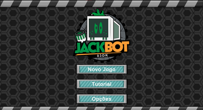
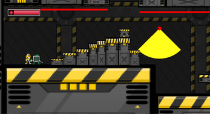

Game Design Document: JackBot 03DK
O projeto é um jogo eletrônico do gênero Aventura, Plataforma 2D, Roguelike com características de deslocamento lateral (side-scrolling), projetado para modos Singleplayer e Cooperativo. O design artístico adota uma estética flat e monocromática, com leves tonalidades de cor aplicadas aos personagens.
Objetivo: Avançar pelas camadas de segurança da fortaleza para derrotar a Inteligência Artificial e retomar o mundo dos humanos.
1. Gêneros e Inspiração
- Gêneros: Plataforma 2D, Indie, Retro, Puzzle, Aventura, Roguelike.
- Estética: Flat, Monocromática com destaques de cor nos personagens.
- Inspirações Notáveis:
- Celeste (Maddy Makes Games, 2018): Profundidade narrativa imersiva no gameplay.
- Unravel Two (Coldwood Interactive, 2018): Mecânica central de quebra-cabeças baseada em colaboração.
- Limbo (Playdead, 2011): Estilo de puzzles desafiadores.
- Super Mario World e Super Picobot: Movimentação fluida e dinâmica.
2. Core Loop (Loop Principal)
O Core Loop é simples, direto e focado em alta re-jogabilidade:
EXPLORAR > APLICAR HABILIDADES/TROCAR PERSONAGEM > SOLUCIONAR DESAFIO > GANHAR CHIPS/POWER-UPS > AVANÇAR À PRÓXIMA SALA/REPETIR.
3. O que torna o JackBot 03DK Único?
A singularidade do projeto reside em três pilares estratégicos que aumentam a rejogabilidade e a profundidade tática:
- Personagens Intercambiáveis: O jogador pode trocar de personagem a qualquer momento (on-the-fly), adicionando uma camada estratégica crucial ao jogo e à resolução de desafios.
- Interação de Recursos entre Personagens: Os personagens podem interagir uns com os outros usando seus próprios recursos (ex: arremessar outro personagem ou imobilizá-lo), promovendo uma cooperação dinâmica essencial.
- Randomização Roguelike: Os recursos interativos das salas de desafios são embaralhados a cada 3 mortes do personagem, garantindo que cada sessão de jogo seja única e imprevisível.
4. Core Gameplay (Principais Features)
- Movimentação Essencial:
- Movimento lateral (esquerda/direita).
- Salto entre plataformas.
- Wall-Jump (Salto na parede).
- Dash (Impulso frontal de alta velocidade fora do chão).
- Combate:
- Corpo a Corpo (Melee): Combate primário.
- Ataques à Distância:Arremesso de objetos.
- Estética cartoon, minimizando violência gráfica (semelhante a Looney Tunes/Mario).
- Câmera: Segue o padrão de plataforma 2D side-scrolling, permanecendo estática durante as salas para visualização completa do ambiente (single-frame), com corte abrupto ao avançar para a próxima tela (similar a Super Mario World e Celeste).
5. Sistemas de Jogo (Economia e Progressão)
- Soft Currency:
- Moeda primária e abundante. Serão chips de computadores coletados nas fases.
- Uso: Comprar power-ups que serão disponibilizados durante as fases.
- Hard Currency:
- Não será utilizada. O jogo não fará uso de Hard Currency (moeda premium/comprável com dinheiro real).
6. Plataforma e Distribuição
A plataforma inicial é o PC, com foco na distribuição via Steam devido à sua abrangência, acessibilidade, infraestrutura robusta (atualizações e integração social) e ampla base de usuários. Há planos para expansão futura para consoles.

